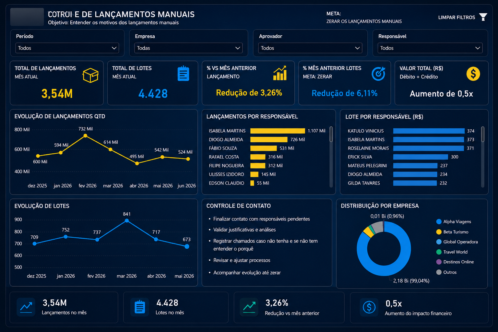

Dashboard Executivo para Controle de Lançamentos Manuais
Dashboard desenvolvido para gestão e monitoramento dos lançamentos manuais contábeis, com foco em volume, responsáveis, impacto financeiro e evolução mensal.

Problema
O acompanhamento era feito por planilhas e tabelas dinâmicas, dificultando a visão gerencial e a priorização das ações.
Objetivo
Centralizar indicadores de volume, responsáveis, impacto financeiro e tendência mensal em um painel executivo.
Processo
Problema
Diagnóstico
Modelagem
Dashboard
Gestão
Solução
- Dashboard executivo em Power BI.
- Tratamento de dados com Power Query.
- Medidas DAX e filtros dinâmicos.
- Indicadores para acompanhamento mensal.
Tecnologias
Resultados
- Centralização das informações.
- Redução de análises manuais.
- Maior visibilidade para liderança.
Produto originado
Dashboard Executivo para Controle Operacional.
Imagem e indicadores adaptados com dados fictícios.